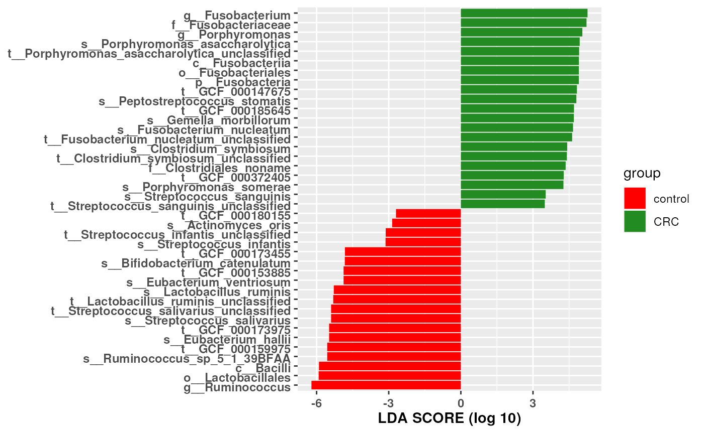

vignettes/lefser.Rmd
lefser.RmdLefser is metagenomic biomarker discovery tool that is based on LEfSe tool and is published by Huttenhower et al. 2011. Lefser is the R implementation of the LEfSe method.
Using statistical analyses, lefser compares microbial populations of healthy and diseased subjects to discover differencially expressed microorganisms. Lefser than computes effect size, which estimates magnitude of differential expression between the populations for each differentially expressed microorganism. Subclasses of classes can also be assigned and used within the analysis.
To install Bioconductor and the lefser package, run the following commands.
if (!requireNamespace("BiocManager", quietly = TRUE)) install.packages("BiocManager") BiocManager::install("lefser")
Then load the lefser package.
lefser
The lefser function can be used with a SummarizedExperiment.
Load the zeller14 example dataset and exclude ‘adenoma’ conditions.
data(zeller14) zeller14 <- zeller14[, zeller14$study_condition != "adenoma"]
Note. lefser supports only two-group contrasts.
The colData in the SummarizedExperiment dataset contains the grouping column study_condition which includes the ‘control’ and ‘CRC’ groups.
table(zeller14$study_condition)
##
## control CRC
## 66 91There can be subclasses in each group condition. In the example dataset we include age_category as a subclass of study_condition which includes ‘adults’ and ‘seniors’. This variable will correspond to the blockCol input argument.
table(zeller14$age_category)
##
## adult senior
## 91 66We can create a contingency table for the two categorical variables.
table(zeller14$age_category, zeller14$study_condition)
##
## control CRC
## adult 46 45
## senior 20 46We can now use the lefser function. It provides results as a data.frame with the names of selected microorganisms and their effect size.
## Names
## 1 `k__Bacteria|p__Firmicutes|c__Bacilli|o__Lactobacillales`
## 2 `k__Bacteria|p__Firmicutes|c__Clostridia|o__Clostridiales|f__Ruminococcaceae|g__Ruminococcus|s__Ruminococcus_sp_5_1_39BFAA`
## 3 `k__Bacteria|p__Firmicutes|c__Clostridia|o__Clostridiales|f__Ruminococcaceae|g__Ruminococcus|s__Ruminococcus_sp_5_1_39BFAA|t__GCF_000159975`
## 4 `k__Bacteria|p__Firmicutes|c__Clostridia|o__Clostridiales|f__Eubacteriaceae|g__Eubacterium|s__Eubacterium_hallii`
## 5 `k__Bacteria|p__Firmicutes|c__Clostridia|o__Clostridiales|f__Eubacteriaceae|g__Eubacterium|s__Eubacterium_hallii|t__GCF_000173975`
## 6 `k__Bacteria|p__Firmicutes|c__Bacilli|o__Lactobacillales|f__Lactobacillaceae|g__Lactobacillus|s__Lactobacillus_ruminis|t__Lactobacillus_ruminis_unclassified`
## scores
## 1 -5.969502
## 2 -5.583681
## 3 -5.583681
## 4 -5.517931
## 5 -5.517931
## 6 -5.327371lefserPlot
lefserPlot(res)

## R version 4.0.3 Patched (2020-10-13 r79342)
## Platform: x86_64-pc-linux-gnu (64-bit)
## Running under: Ubuntu 20.04.1 LTS
##
## Matrix products: default
## BLAS/LAPACK: /usr/lib/x86_64-linux-gnu/openblas-pthread/libopenblasp-r0.3.8.so
##
## locale:
## [1] LC_CTYPE=en_US.UTF-8 LC_NUMERIC=C
## [3] LC_TIME=en_US.UTF-8 LC_COLLATE=en_US.UTF-8
## [5] LC_MONETARY=en_US.UTF-8 LC_MESSAGES=C
## [7] LC_PAPER=en_US.UTF-8 LC_NAME=C
## [9] LC_ADDRESS=C LC_TELEPHONE=C
## [11] LC_MEASUREMENT=en_US.UTF-8 LC_IDENTIFICATION=C
##
## attached base packages:
## [1] parallel stats4 stats graphics grDevices utils datasets
## [8] methods base
##
## other attached packages:
## [1] lefser_0.99.9 SummarizedExperiment_1.19.9
## [3] Biobase_2.49.1 GenomicRanges_1.41.6
## [5] GenomeInfoDb_1.25.11 IRanges_2.23.10
## [7] S4Vectors_0.27.13 BiocGenerics_0.35.4
## [9] MatrixGenerics_1.1.3 matrixStats_0.57.0
## [11] BiocStyle_2.17.1
##
## loaded via a namespace (and not attached):
## [1] mvtnorm_1.1-1 lattice_0.20-41 zoo_1.8-8
## [4] assertthat_0.2.1 rprojroot_1.3-2 digest_0.6.25
## [7] R6_2.4.1 backports_1.1.10 evaluate_0.14
## [10] ggplot2_3.3.2 pillar_1.4.6 zlibbioc_1.35.0
## [13] rlang_0.4.7 multcomp_1.4-14 Matrix_1.2-18
## [16] rmarkdown_2.4 pkgdown_1.6.1 labeling_0.3
## [19] desc_1.2.0 splines_4.0.3 stringr_1.4.0
## [22] RCurl_1.98-1.2 munsell_0.5.0 DelayedArray_0.15.12
## [25] compiler_4.0.3 xfun_0.17 pkgconfig_2.0.3
## [28] systemfonts_0.3.2 libcoin_1.0-6 htmltools_0.5.0
## [31] tidyselect_1.1.0 tibble_3.0.3 GenomeInfoDbData_1.2.3
## [34] bookdown_0.20 coin_1.3-1 codetools_0.2-16
## [37] crayon_1.3.4 dplyr_1.0.2 MASS_7.3-53
## [40] bitops_1.0-6 grid_4.0.3 gtable_0.3.0
## [43] lifecycle_0.2.0 magrittr_1.5 scales_1.1.1
## [46] stringi_1.5.3 farver_2.0.3 XVector_0.29.3
## [49] fs_1.5.0 ellipsis_0.3.1 ragg_0.3.1
## [52] vctrs_0.3.4 generics_0.0.2 sandwich_2.5-1
## [55] TH.data_1.0-10 tools_4.0.3 glue_1.4.2
## [58] purrr_0.3.4 survival_3.2-7 yaml_2.2.1
## [61] colorspace_1.4-1 BiocManager_1.30.10 memoise_1.1.0
## [64] knitr_1.30 modeltools_0.2-23